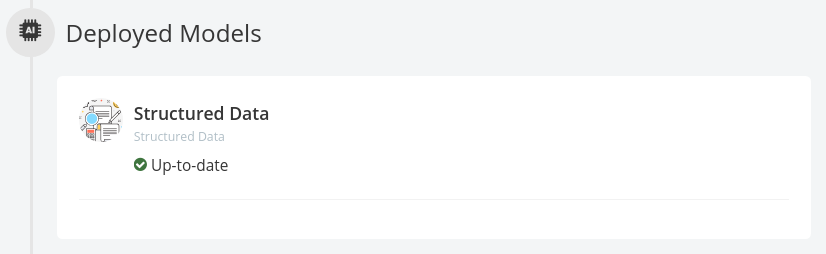

Processing Data¶
When a dashboard is created with new data, the raw data will automatically be processed, preparing it for analysis and visualization. This preparation is done by applying a structured data model.
Other models can be applied once the structured data analysis is complete.

Unsupervised NLU Model¶
The Unsupervised NLU Model is designed to automatically analyze large textual datasets as a method of topic and theme discovery
Built on top of our proprietary Bayesian Neural Network and Generative Model, Stratifyd dynamically identifies semantic topic groups based on the context in your input data.
This is all done in a three-step process:
- The engine starts by performing NLP in over 24 languages.
In this step, your input documents are tokenized into corresponding N-Grams (N>=2), lemmatized (words with the same root are grouped together e.g. run & ran), stemmed, spam/junk and stop words are filtered out, and part-of-speech tagging and named entity extraction are performed. A large N-Gram-based content network is then created based on your input data files.
- The engine runs a Multi-Model approach on top of the N-Gram-based content network.
This includes using our proprietary text analytics algorithms extended from Bayesian Neural Network, Generative Model, LSTM (Long Short Term Memory), and Seq2Seq NLU. In this step, data input is clustered into semantically meaningful groups.
The groups are generated and visualized by statistical significance (i.e. the percentage attributed to each topic category in the Semantic Topic Visualization). Each topic is tagged with top representative terms in Buzzwords.
- Stratifyd automatically processes all geographical (Where), temporal (When), contributor (Who), as well as any other structured data.
It joins the data with the N-Gram-based content network for you to pivot and construct analytics questions against your dataset.
AutoLearn¶
AutoLearn builds custom machine learning models based on your data and chooses the most suitable ensemble model based on the F1 score. After training the model with your dataset, you can apply the model to a new dataset that has the same input dimension.
How it works¶
During training, the first step is to select the training field. Traning field can be textual or numerical. If your textual field is categorical rather than free-form, you have the option to indicate this before you submit for training.
After the training field is selected, AutoLearn pre-processes the data you selected. For numerical training fields a 0 will be used to replace empty fields. For textual fields, AutoLearn removes stopwords and lemmatizes the text as part of the text pre-processing.
After the pre-processing we now have at most three types of feature vectors, and the classification model can be trained. The classification models:
- Label Embedding Attention Network
are used with all features available and the best model is chosen for each feature. An ensemble model is generated and trained in addition to each individual model. The most performant model will be chosen as the final model and will then be ready to deploy on your data.
Performance is evaluated through a weighted average of F1 score for each class.
Random Forest¶
Semi-auto Taxonomy¶
Model overview¶
Semi-Auto Taxonomy (SAT) Model is designed to be a hybrid model, leveraging the features of the Unsupervised NLU Model and a traditional taxonomy model.
Given a data stream (text) as training set, the SAT model will apply an existing taxonomy tree on the stream. Each record in the stream will be given one or more labels from the taxonomy tree (if applicable). Then, SAT model will be trained on the stream, with the information from the labels as initialized parameters. When the traning is finished, the trained model will be pushed to the model tab for further usage.
In the deployment phase, the trained model will be applied on a selected data stream. The data stream can either be the training set, or a new one. Note that the stream should come from the same source as the training set if it is a new one. The reason is that the sample distribution should be consistent for the test and training set.
Input (Training)¶
The input of the training phase is 1. a taxonomy tree. and 2. a data stream.
Output (Training)¶
The output of the training phase is model added into the model tab.
Input (Deployment)¶
The input of the deployment phase is a data stream selected by the user.
Output (Deployment)¶
The output of the deployment phase is one or more labels and keywords associated with each record in the stream. Each label and keyword are internally associated with a confidence score. The confidence score are also given by the SAT model.
The number of labels for each record depends on how many labels have a confidence score larger than a dynamic threshold (1/(topic # + 1)). In other words, if the confidence score of a label is greater than the threshold, then the label will be given to the record. The confidence score for a label can be roughly regarded as the occurence of sampled tokens from the input document, under the label.